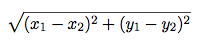

Homework 1 Solutions
Solutions: You can find the file with solutions for all questions here.
Review from lab
Division
Let's compare the different division-related operators in Python:
| True Division (decimal division) The / Operator |
Floor Division (integer division) The // Operator |
Modulo (similar to a remainder) The % Operator |
|
|
|
|---|
Note that floor division and modulo both return an integer while true division always returns a floating point number.
One useful technique involving the % operator is to check
whether a number x is divisible by another number y:
x % y == 0For example, in order to check if x is an even number:
x % 2 == 0Floats and precedence
Floating point numbers (floats) behave a lot like real numbers. You can identify a float by the decimal point. All floats have decimal points. To write a floating point number (as a literal) you must add a decimal point!
>>> 3.141592
3.141592
>>> 2*3.141592 # you can mix ints and floats
6.283184
>>> pie = 3.141592 # you can assign values to variables
>>> pie
3.141592
>>> pie/pie
1.0
>>> pie/pie == 1 # a float can be equal in value to an int
True
>>> from math import pi # here is a better pi
>>> pi
3.141592653589793
>>> 5.0/3.0 # this is division of floats, not ints
1.6666666666666667
>>> 2**(1/2) # square root - isn't that transcendental?
1.4142135623730951Expressions follow operator precedence (just like in math). Operations are performed one at a time in a specific order. Parenthesis are used to specify order (again, just like in math - remember PEMDAS?).
>>> 2 + 3 - 4 + 5 # equal precedence, left to right
6
>>> 2 + 3 - (4 + 5) # order matters - parentheses are your friend
-4
>>> (((2 + 3) - 4) + 5) # explicit order of the first example
6
>>> 2 + 3 * 4 # * and / bind more tightly than + or -
14
>>> 2 + (3 * 4)
14
>>> (2 + 3) * 4
20
>>> 2 + 3 / 4 * 5 # what about * and / ?
5.75An expression can have multiple return values, called a tuple:
>>> 2, 3
(2, 3)
>>> x, y = 1, pi
>>> y
3.141592653589793Strings
It is very useful to be able to write programs that operate on strings, not just numbers. Without strings, web browsers and word processors would be like the matrix! Just as with ints, floats, and booleans, strings are a data type and have certain operators defined on them:
>>> 'cal' # a string literal is a sequence of characters in quotes
'cal'
>>> "rocks" # either kind of quote, but they need to match
'rocks'
>>> "cal" + "rocks" # + is concatenation
'calrocks'
>>> 'cal' * 3 # * is replication
'calcalcal'
>>> 'cal' == "cal" # equality is if they are the same string (notice the single and double quotes)
True
>>> 'Cal' == 'cal' # case sensitive
False
>>> 'Cal' < 'cal' # lexicographic ordering, with upper before lower case
True
>>> 'you' is not 'me'
TrueProblems
Question 1: Oddly we go
Define odd, which takes an integer and returns whether it is odd.
Your solution will look like return <expression>.
def odd(number):
"""Return whether the number is odd.
>>> odd(2)
False
>>> odd(5)
True
"""
return number % 2 == 1Use OK to test your code:
python3 ok -q odd --localQuestion 2: Distance
Implement a function called distance(x1, y1, x2, y2) where:
x1andy1form an x-y coordinate pairx2andy2form an x-y coordinate pair
distance returns the Euclidean distance between the two points. Use the
following formula:

from math import sqrt
def distance(x1, y1, x2, y2):
"""Calculates the Euclidian distance between two points (x1, y1) and (x2, y2)
>>> distance(1, 1, 1, 2)
1.0
>>> distance(1, 3, 1, 1)
2.0
>>> distance(1, 2, 3, 4)
2.8284271247461903
"""
return sqrt((y2-y1)**2 + (x2-x1)**2)Use OK to test your code:
python3 ok -q distance --localQuestion 3: Distance (3-D)
Now, let us edit this program to get the distance between two
3-dimensional coordinates. Your distance3d function should take six
arguments and compute the following:

def distance3d(x1, y1, z1, x2, y2, z2):
"""Calculates the 3D Euclidian distance between two points (x1, y1, z1) and
(x2, y2, z2).
>>> distance3d(1, 1, 1, 1, 2, 1)
1.0
>>> distance3d(2, 3, 5, 5, 8, 3)
6.164414002968976
"""
return sqrt((y2-y1)**2 + (x2-x1)**2 + (z2-z1)**2)Use OK to test your code:
python3 ok -q distance3d --localQuestion 4: Diff
Implement a function diff that takes as input three integers x, y, and z. It should
return whether subtracting one of these numbers from another gives the third.
def diff(x, y, z):
"""Return whether one argument is the difference between the other two.
x, y, and z are all integers.
>>> diff(5, 3, 2) # 5 - 3 is 2
True
>>> diff(2, 3, 5) # 5 - 3 is 2
True
>>> diff(2, 5, 3) # 5 - 3 is 2
True
>>> diff(-2, 3, 5) # 3 - 5 is -2
True
>>> diff(-5, -3, -2) # -5 - -2 is -3
True
>>> diff(-2, 3, -5) # -2 - 3 is -5
True
>>> diff(2, 3, -5)
False
>>> diff(10, 6, 4)
True
>>> diff(10, 6, 3)
False
>>> diff(9, 3, 6)
True
>>> diff(6, 3, -9)
False
"""
return x-y==z or y-x==z or y-z==x or z-y==x or x-z==y or z-x==yUse OK to test your code:
python3 ok -q diff --localQuestion 5: Add absolute
We've seen that we can name a value by assigning it to a variable. Functions
are objects too. Try typing the name of a function you have defined or imported
into the python interpreter. Try importing a function as in below.
Try assigning it, e.g., >>> funfun = add. Try calling this. What
is its type?
Fill in
the blanks in the following function definition for adding a to the
absolute value of b, without calling abs or defining any new functions.
from operator import add, sub
def a_plus_abs_b(a, b):
"""Return a+abs(b), but without calling abs.
>>> a_plus_abs_b(2, 3)
5
>>> a_plus_abs_b(2, -3)
5
"""
if b < 0:
f = sub
else:
f = add
return f(a, b) # You can replace this line, but don't have to.Use OK to test your code:
python3 ok -q a_plus_abs_b --localWe choose the operator add or sub based on the sign of b.
Question 6: Quadratic Formula
Complete the function that returns both roots of a quadratic polynomial
using the quadratic formula. Your solution must call the sqrt function
exactly once.
from math import sqrt
def quadratic(a,b,c):
"""
>>> quadratic(1,0,-1)
(-1.0, 1.0)
>>> quadratic(1,2,1)
(-1.0, -1.0)
>>> quadratic(1,3,-4)
(-4.0, 1.0)
"""
t = sqrt(b*b - 4*a*c)
return (-b-t)/(2*a),(-b+t)/(2*a)Use OK to test your code:
python3 ok -q quadratic --localWe use a temporary variable to hold the subexpression within the sqrt.